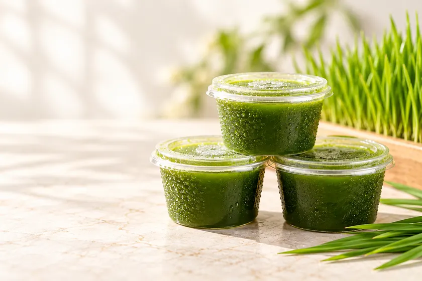
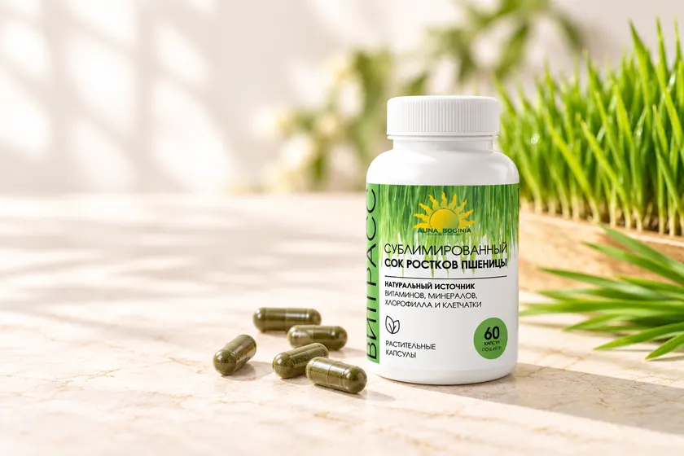
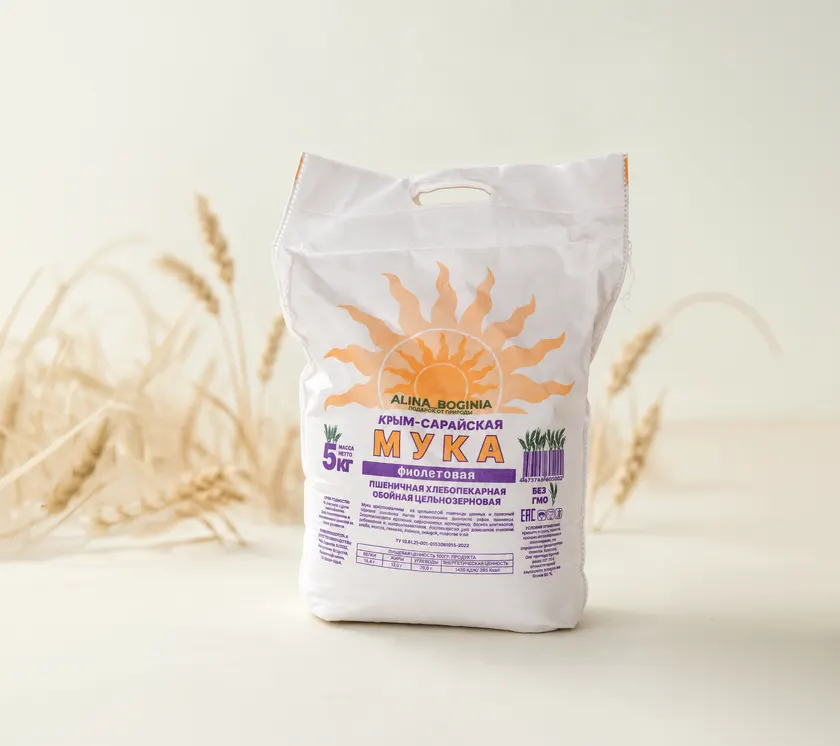
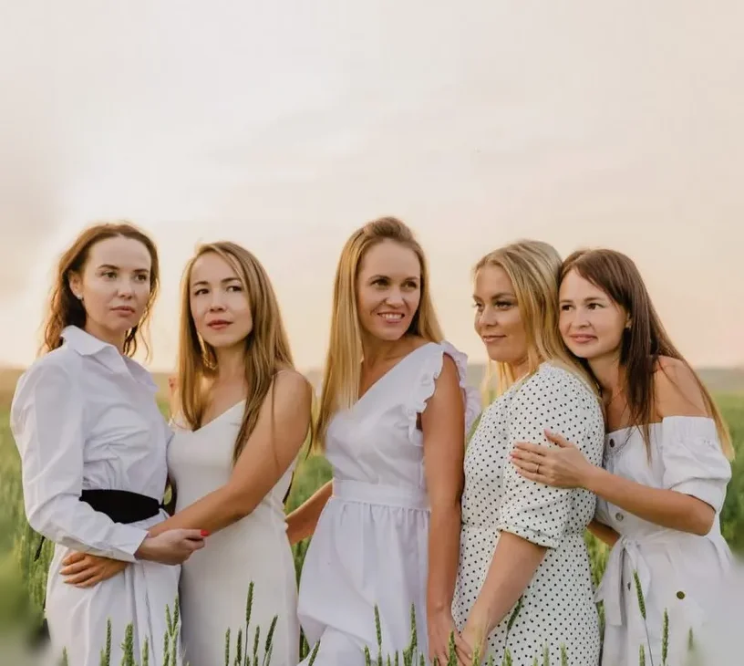
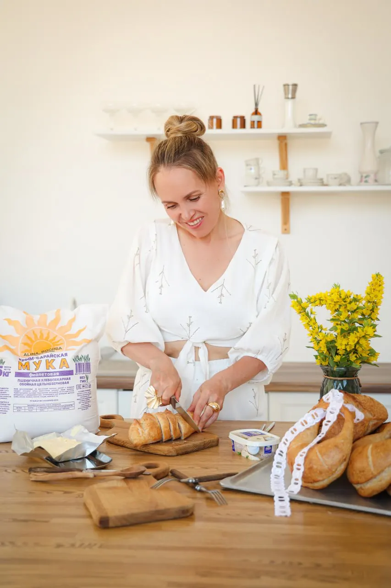

Перед продукцией — короткий блок «Что такое витграсс». В карточках — по одной фразе и «Подробнее», которое открывает окно товара. «Стать партнёром» — отдельной полосой под товарами.
Плюс: делается быстро, человек не уходит с главной. Минус: для поиска почти ничего не даёт — у товара нет своей страницы.
Сок молодых ростков пшеницы — от зерна до пользы за 5 дней
Выращиваем пшеницу на собственных полях в Татарстане
Проращиваем в цехе и срезаем, когда трава дорастёт до 15–17 см — на пике пользы

3Сок — холодным отжимом и сразу в заморозку, зерно мелем целиком
Свежий сок ростков пшеницы в порционных капсулах: 1 капсула — 1 день.

Тот же сок, высушенный при сверхнизкой температуре, — в капсулах. Без консервантов и сахара.

Редкий сорт с антоцианами — как в чернике. Мелем зерно целиком.

Расскажем об условиях и поможем с первыми клиентами
Карточка на главной ведёт на страницу товара. Ниже — пример для муки: всё, что человек хочет знать до покупки, по порядку.
Плюс: лучший вариант для поиска («мука из фиолетовой пшеницы купить», «как принимать витграсс»), ссылку можно давать в соцсетях и представителям. Минус: больше текста и нужны фото на каждый товар.
Редкий сорт пшеницы с антоцианами. Мелем зерно целиком на старинной мельнице — без улучшителей.
У фиолетовой пшеницы цвет зерну дают антоцианы — природные антиоксиданты, те же, что в чернике и голубике. Они живут в оболочке зерна.
При обычном тонком помоле оболочку отсеивают вместе с отрубями — и пользы почти не остаётся. Мы мелем зерно целиком, поэтому мука получается серой, плотной и ароматной.
Природные антиоксиданты из оболочки фиолетового зерна
Оболочка, зародыш и ядро — клетчатка и минералы на месте
Ни улучшителей, ни отбеливателей — только зерно
Хлеб, блины, оладьи; при выпечке антоцианы в основном сохраняются
Сюда хорошо встанет одна честная цифра от Алины: например, сколько муки получается с гектара или сколько стоит килограмм зерна этого сорта.
Замените половину обычной муки — хлеб получится плотнее и ароматнее
Можно на 100% фиолетовой муке
Ореховый вкус, необычный цвет
В сухом прохладном месте, в закрытой ёмкости. Цельнозерновая мука «живая» — в ней есть масла зародыша, поэтому срок хранения короче, чем у белой.
Сюда — 3 настоящих отзыва о муке с маркетплейсов (с разрешения)
…
…
5 кг цельнозерновой муки из своего зерна
Для замороженного сока страница такая же, но вместо «что испечь» — «Как принимать» (дозировки 30 / 90 мл, 4 способа разморозки картинками), «Курсы» (пробный 15 порций / месяц 30) и кнопка «Выбрать представителя» с поиском города прямо на странице.
Всё из варианта 2, плюс раздел со статьями-ответами и отдельная страница для каждого города. Это то, что люди чаще всего ищут о витграссе.
Плюс: самый сильный приток из поиска и доверие — сайт отвечает на все вопросы. Минус: долгая работа; статьи нужно писать постепенно (можно по 1–2 в неделю).
Сколько порций в день, натощак или нет, с чем смешать
Ищут: «как принимать витграсс»И почему его нужно выпить за 10 минут
Ищут: «как размораживать витграсс»Чем отличаются и кому что подходит
Ищут: «витграсс в капсулах или замороженный»Пошагово, с фото
Ищут: «фиолетовая мука рецепты»Что важно знать (с пометкой «посоветуйтесь с врачом»)
Ищут: «витграсс беременным»
Поле, цех 400 м², сертификаты — фото и видео
Доверие + галерея «Истории»Замороженный сок ростков пшеницы в Казани можно заказать у представителей Витграсс — они привезут сок и подскажут, как его принимать.
29 городов → 29 страниц, каждая отвечает на запрос:
витграсс купить казаньсок ростков пшеницы уфавитграсс набережные челны
Новый представитель в списке — страница обновляется сама.